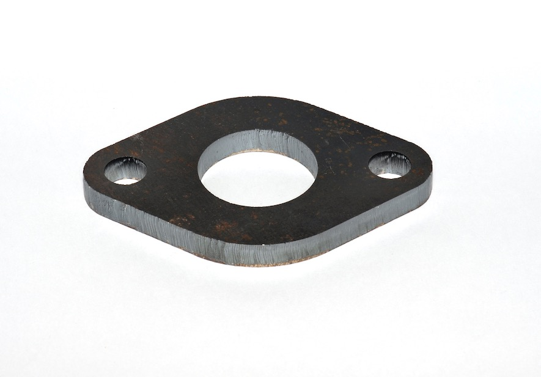

Ответный фланец D-40 трубопровода моноблока TATSUNO
Артикул: 0291
Tatsuno (С-бенч, ТАТСУНО РУС )
Раздел: Насосы и моноблоки · АЗС
Цена и наличие — по запросу. Поставляем оригинал и аналоги. Доставка по России.
Описание
Ответный фланец D-40 трубопровода моноблока TATSUNO производства Tatsuno (С-бенч, ТАТСУНО РУС ) — позиция из раздела «Насосы и моноблоки» для АЗС. Компания SYNDICAT поставляет оборудование и комплектующие для автозаправочных и газозаправочных станций по всей России. Цена и наличие «Ответный фланец D-40 трубопровода моноблока TATSUNO» — по запросу: оставьте заявку или позвоните, подберём оригинал или аналог и рассчитаем доставку.